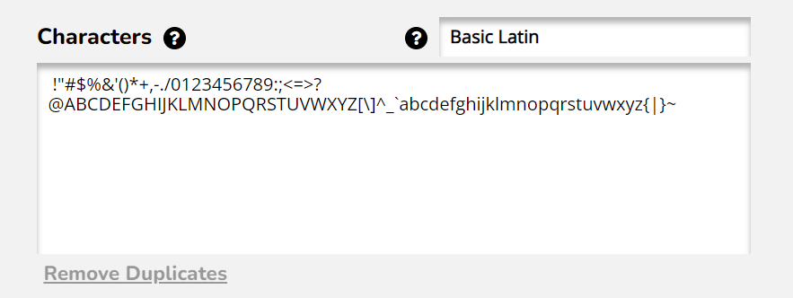
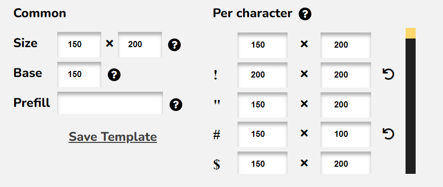
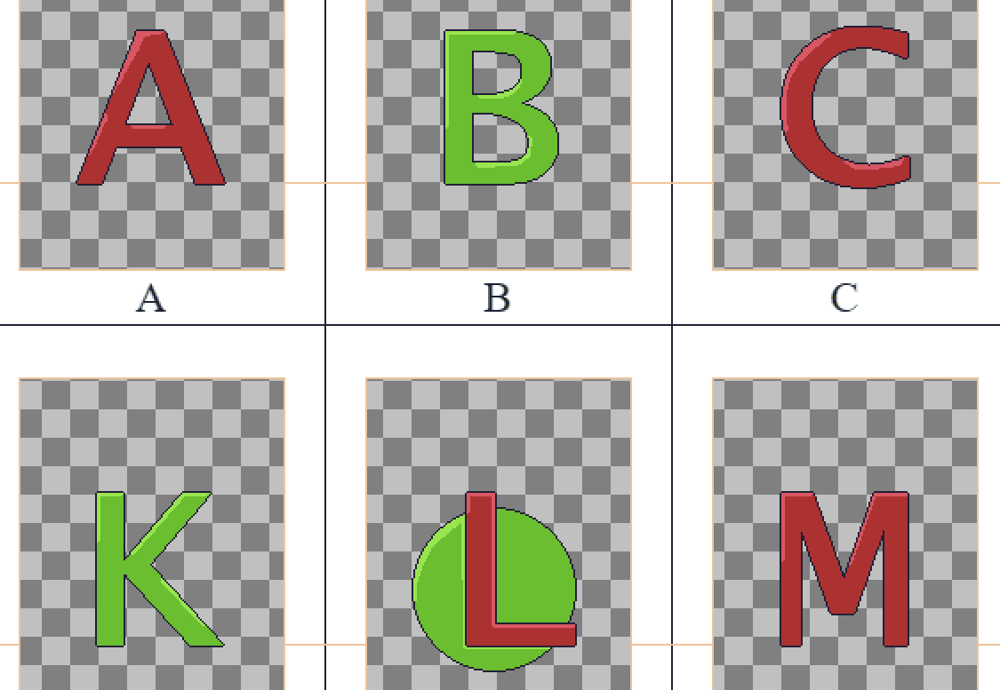

Making a font with Calligro consists of two steps. First, you define basic font parameters to generate a template. This template is a PNG file with designated places for each character. You can then draw your characters in any graphics software you'd like.
Second, you open the filled in template back in Calligro, configure additional parameters, and export a bitmap font. To see examples on how to use an exported font with different game engines and frameworks, check out the samples.
Write all characters you want to include in your font in the characters input. You can choose an existing unicode preset like Latin Basic, Hiragana or Georgian. You can also just write any unicode characters you'd like, except for symbols made from multiple unicode code points (like emojis). Note that any duplicated characters will be ignored.
In the "common" section you can choose size and base for all characters. In the "per character" section you can also override size for each individual character. Size is simply the total character width and height in pixels. A character's base is the height from the top at which the character "sits". Everything below the base will stick out like in the letters "j" and "g". This means that a character of height 100 and base 70 will have 30 pixels below the base.
Optionally, you can choose a regular font to prefill the template with. Do this if you don't want to draw each character from scratch. Keep in mind prefilling might not work great for very small character sizes (meant for pixel art). Below you can see an example of a part of template prefilled with Lucida Console.
In the web version of Calligro you can choose from a limited set of commonly used fonts. In the desktop version you can choose any font installed on your system. Be mindful of the font's license.
Thanks to the prefill option Calligro can be used to convert a trutype font into a BMFont. However, if you’re looking specifically for that try tools like the original BMFont or Hiero instead.
Save/download the template you configured. You will get two files - a .png and a .calligro file. Open the PNG in any graphics editor (for example Photoshop or Aseprite) and draw your font. Characters should be drawn inside the yellow boundaries. Horizontal lines between them determine the character base.
Go to either "Step 2" in the web version or to "Fonts -> Generate a font" in the desktop version. Open/upload the filled in .png file and the corresponding .calligro file back in Calligro.
Specify the desired margin, line height and kerning pairs. You can preview the outcome live in the preview section.
Margin is a distance bewteen characters in pixels. Line height is the distance from the top of one line of text to the top of the line below. Kerning pairs modify the margin between specific character. For example, pair "ab" with distance -10 will cause "b" to be 10 pixels closer to "a". Pair "ab" ≠ "ba"!
Be aware that even though kerning pairs are part of the BMFont specification, not all engines and frameworks support it. From all the tools in the samples section, only Godot seems to support it.
Generate and save/download the final font.
You can choose between the TXT and XML formats.
Some engines and frameworks require the TXT format and some require the XML format.
After exporting a font you will get a .fnt file and a corresponding .png file.
They need to always be kept toghether.
If you ever want to change the name of the PNG you need to edit the FNT file in a text editor and replace the PNG file name.
Note on file names
Examples of tools with TXT support: